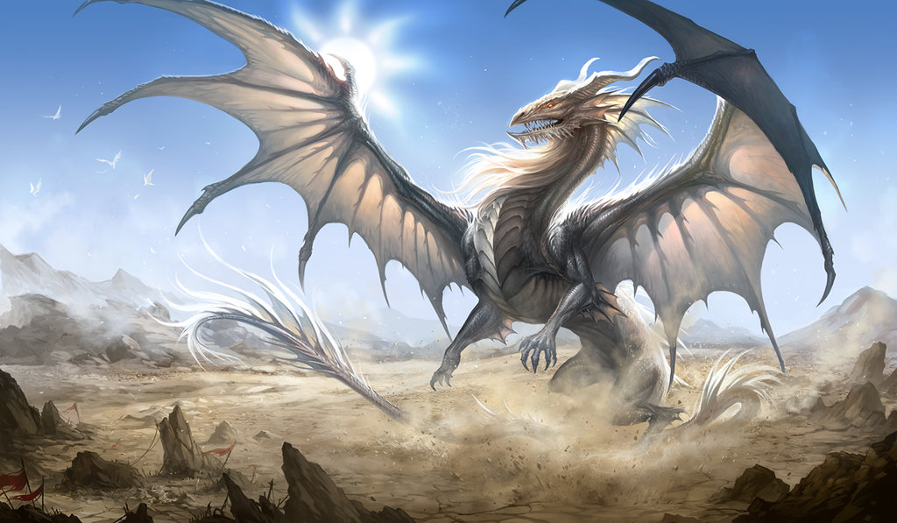
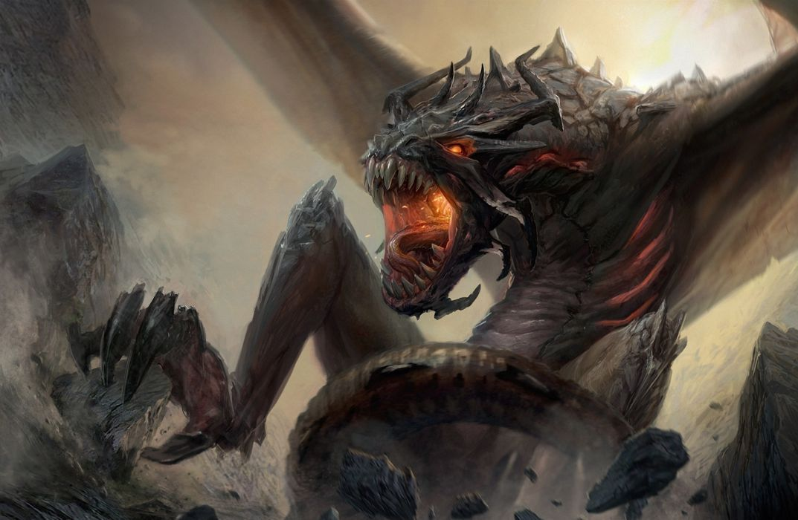

Smoki pojawiają się w wielu mitologiach, w tym mitologii greckiej. Zazwyczaj, podobnie jak gryfy pełnią funkcję strażników, przypisywane im są także liczne przymioty jak mądrość i siła. Nigdy nieusypiający smok stał na straży złotego runa z polecenia boga Aresa, inny pilnował wyroczni Apolla w Delfach, jeszcze inny zaś źródła w okolicy późniejszego miasta Teby. Ostatniego zabił Kadmos, jego zęby zaś posiał w ziemi, z czego powstali dzielni wojownicy[3][4]. Ze smokami walczyło wielu mitycznych bogów i bohaterów, m.in. Apollo (smok Pyton), Jazon (smok pilnujący złotego runa), Herakles (Ladon), czy Perseusz (smok Cetus). W mitologii sumeryjskiej bogini Tiamat, z której powstała ziemia i niebo, przedstawiana była pod postacią smoka. W mitach anglosaskich znany jest także smok Grendel oraz jego matka, pokonane przez Beowulfa. W legendach arturiańskich także pojawiają się smoki, m.in. biały i czerwony smok z wizji Merlina. Mitologia skandynawska określa niekiedy mianem smoka węże Midgardsormra i Nidhogga[5]. W mitach germańskich pojawia się smok Fafnir, pokonany przez Sigurda.

W chrześcijaństwie smok uosabia zazwyczaj zło, w Biblii wąż z raju często określany jest tym mianem, podobnie jak Lewiatan, pojawia się także 13 razy w Apokalipsie św. Jana utożsamiany z Szatanem i Diabłem.
Wielu świętych przedstawianych jest ze smokiem jako atrybutem, m.in. św. Małgorzata z Antiochii, czy św. Jerzy który pokonał smoka nieopodal miasta Sylene[6][7]. U Słowian bóg Chworz bywał ukazywany pod postacią smoka[7]
Smoki pojawiają się w wielu źródłach starożytnych[9], średniowiecznych bestiariuszach i fizjologach oraz licznych późniejszych źródłach, które jednak w większości opierają się na wymienionych wyżej. O smokach powstało wiele legend, jak o każdym z fantastycznych stworzeń.
Smoki, jako wielkie węże, miały często kryć się wśród liści na drzewach lub przy wodopojach, gdzie polowały na słonie. Gdy przechodziły pod drzewami, smoki rzucały się na nie i dusiły lub też zabijały trującym oddechem, po czym wypijały z nich chłodną nawet podczas upałów krew. Niekiedy słoniowi udawało się otrzeć o kamień i w ten sposób zgładzić smoka, sam jednak zwykle umierał z wycieńczenia. Wówczas jego krew tworzyć miała cenny pigment, cynober.
Smoki mieszkać też miały często na pustyniach, gdzie kryły się w jaskiniach. Gdy wychodziły przed wejście, powietrze zaczynało wirować i unosiło je w powietrze, wedle niektórych autorów, latać smoki mogły też dzięki sile swego jadu, przed którym uchodziło nawet morze.
W smoczych głowach znajdować się miały wedle legend białe, twarde, drogocenne i czarodziejskie kamienie zwane draconce lub karbunkułami. Nosili je ponoć często królowie na Dalekim Wschodzie. By je zdobyć, odważni myśliwi lub magowie usypiali smoki odpowiednimi ziołami.
Smok miał też silne związki z morzem, bywały bowiem odmiany wodne. Miały ponoć pragnienie tak wielkie, że sama woda im nie wystarczała i połykały wiatr. W tym celu goniły statki i odbierały im wiatr z żagli, przewracając je przy tym. Niekiedy pojawiały się także legendy wiążące pływy z połykaniem wody przez ogromne węże morskie lub smoki, żyjące na dnie wód.

W porównaniu z innymi stworzeniami fantastycznymi, smok nie miał ściśle określonego wyglądu. Często utożsamiano go z wielkim wężem, mającym ponoć do 10 kroków długości i grubość do 10 dłoni[8]. Cztery łapy były zakończone ostrymi pazurami, a pokryte łuskami ciało błyszczało się w słońcu. Wedle niektórych autorów były silnie jadowite, wedle innych nie, gdyż do zabijania ofiar używały ogona, ostrych zębów lub je dusiły. Zazwyczaj smok miał niewielką głowę z grzebieniem na czubku. Zgodnie z etymologią nazwy miał posiadać znakomity wzrok. Niekiedy smok posiadać miał również skrzydła, podobne nietoperzym. Zdarzało się, że smoki przedstawiano z uszami, rogami, czy brodą.